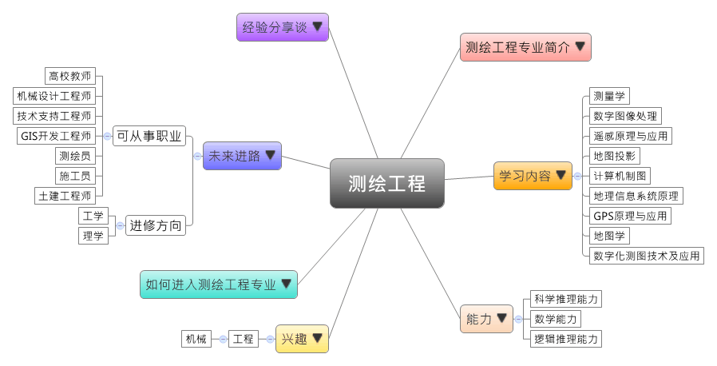

- 专业大观园
-

- 专业介绍
-
什么是测绘工程专业？
测绘工程是一门测量空间与大地各种信息并绘制地形图的专业，甚至会包括其他行星的地形地貌、重力场等。测绘工程专业的对象相当广泛，如地表的山川、河流、房屋、道路、植被，或是地下的地质构造与运动、水文资源、矿藏分布等。在职业上，测绘工作经常需要在野外从事地籍或工程测量作业，要有不畏艰苦的心态，具备责任感、细心与耐心等特质；在生活中，最常看到的测绘体现便是谷歌地图，通过无人机技术完成城市街道的测绘测量。除了具备 3D 功能、鸟瞰视图可显示天空、海洋、街景等，亦能观看天气图层、语音搜索特定地点、查询公交线路等，为人们生活中提供了相当大的便利性。
测绘工程专业除了训练学生培养具备大地测量、海洋测量、空间测量、摄影测量与遥感测量等方面的能力，也通过信息源设计、编制各类地图等教学，让学生成为兼具测量工程设计与实务技术操作的专才。

测绘仪器操作演练 测绘新科技－无人机操作展示
- 学习内容
-
测绘工程专业学生主要学习测绘学的基本理论与技能、空间精密定位与导航、城市与工程建设，以及测量工程的设计、实施和管理等理论与实务技术。由于测绘工程相当注重应用的能力，学生须接受摄影测量、图像图形信息处理、以及各类地图设计与编制的专业训练。
本专业学习方向通常分为三类：测绘科学与技术类、数字测图原理与应用类、GPS与CAD制图类；其他学校也有开设遥感测量或数据库原理与应用等课程，以上皆为学生未来就业做好准备。测绘工程专业主干课程有：矿山测量学、测量学、误差理论与测量平差、大地控制测量学、工程测量学、摄影测量学、数字图像处理、遥感原理与应用、地图投影、计算机制图、地理信息系统原理、GPS原理与应用、地图学、地籍测量学、数字化测图技术及应用……等。此外，学生须加选一门以上的专业实验课程，如：地形测量实习、大地测量实习、控制网平差计算实习、摄影测量实习、工程测量实习、矿山测量实习、地籍测量实习、GPS定位及导航实习、遥感图像处理实习和地图编绘实习进行选修。
本专业可以习得的知识与获得之能力、技能列点：第一，掌握测量学相关的基本理论和知识，如大地测量、现代工业测量、空间测量、地球动力学、海洋测量；第二，掌握解析摄影测量与数字摄影测量，以及图像图形信息处理的理论和应用技能；第三，具有建立国家大地控制网、进行全球空间精密定位与导航，测绘大比例尺数字化测图与地籍图，以及建立相关信息系统的能力。
- 能力
-
测绘工程专业学生，需具备以下能力：
相关性向能力 说明 科学推理能力  具有信息系统的建立能力
具有信息系统的建立能力
能够从事国家大地控制网的建立能力数学能力 具备数学推导的能力
具有制作与解析大比例尺数字化测图的能力逻辑推理能力 能分析三维空间的能力
具备批判与独立思考的能力
能够正确解读地理信息数据并进行验证
- 兴趣
-
若你对下列活动或事物有高度兴趣，可考虑进入测绘工程专业学习：
工程 土木 喜欢从事野外工作
擅长进行图纸工作
对地形测量相关的事物，如GPS原理与应用等感兴趣
- 如何进入此专业
-
下面列举开设测绘工程专业的211工程重点大学院校：
- 未来进路
-
可从事职业
未来我们国家将建设智慧城市，其中有一半的工作都和测绘行业相关；测绘工程专业毕业生具有极其宽广的就业前景，在各种工程规划、设计、施工和运营管理工作的收入也是相对较高的。学生毕业后可到国土资源相关部门如市政、测绘、规划、国土、房产，以及海洋、航空航天部门、地震地质部门从事技术与管理的工作；此外，亦有不少毕业生选择到信息技术公司、设计院、施工企业、监理公司、谘询公司等单位从事测绘工程勘察、设计、实施、管理与开发等工作。对于教学与研究有兴趣的毕业生，亦可到各政府部门、高校、科研单位担任教师和研究员。在工作职场上皆能发挥编制地图、建立信息网等专长：
行业 职业 信息技术服务业 技术支持工程师 计算机、通信和
其他电子设备制造业机械设计工程师 仪器仪表制造业 GIS开发工程师、测绘员 国家机构
（国家测绘地理信息局、
地质调查局）土建工程师、测量员、测量工程师、测绘工程师、机械工程师 教育 高校教师 科学研究 测绘工程研究员 进修方向以下列举测绘工程专业毕业生可以继续修读之学科门类、一级学科与硕士点：
学科门类 一级学科 硕士点 工学 测绘科学与技术大地测量学与测量工程、摄影测量与摇感、地图制图学与地理信息工程、测绘科学与技术、国土信息与生态环境、测绘仪器与系统 控制科学与工程 模式识别与智能系统、导航、制导与控制 软件工程软件工程 工程（专业硕士）测绘工程 理学 地理学地图学与地理信息系统
- 经验分享谈
-
中国航测与遥感之父——王之卓
20世纪50年代，王之卓即在用航测方法测绘国家基本比例尺地图过程中，纠正了当时使用的苏联方法中用于山区的“瓦洛夫公式”的不足，并提出新的解算公式。该公式后来在航测界被称为“王之卓公式”。“王之卓公式”从理论上对航测成图方法和空中三角测量的误差进行了分析，在我国航测事业的发展中具有重要的奠基作用。
王之卓曾说“航测与遥感技术本质上没有什么差别，都是根据电磁波的辐射，只不过遥感记录的电磁范围要比航空测量的宽得多。但从发展中看问题，航测没有理由永远限用在照片的狭窄的光谱范围内。从信息的处理方法而言，比较起来遥感偏重在物理方面，而摄影测量偏重在几何方面。”王之卓的观点指明了传统摄影测量向遥感发展的必然趋势、航空摄影测量和遥感的学科关系及其属性。
在王之卓推动下，1980年，武汉测绘科技大学航测系成立了我国第一个遥感教研室，开设了“遥感技术基础”等课程。同时，还将老专业“航空摄影测量”成功改造为“摄影测量与遥感专业”。此后，该专业在王之卓带领下，发展成为测绘类专业中唯一的全国重点学科，使我国成为诸多外国专家眼中可与美国、德国并列的世界航测遥感技术的3个超级大国之一。
王之卓从教60余年，不仅桃李满天下，还为中国测绘学科的教材建设做出了突出贡献。他编纂了《摄影测量原理》和《摄影测量原理续编》，这两部书不仅囊括了当时国际摄影测量的最新成就，而且代表着我国摄影测量的最高水平，是该学科的经典著作。【资料来源：上海交通大学新闻网[学在交大·名师荟萃]王之卓：中国航测与遥感之父.】